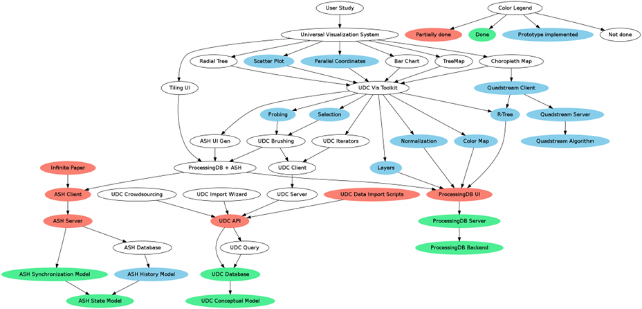

Universal Data Cube Visualization System
Journal of progress
8/29/12
MIT Student Center
Documents envisioned:
- Visualization Techniques, characterized by data cube structure
- Scatter Plot
- Bar Chart
- Stacked Bar Chart
- Pie Chart
- Choropleth Map
- Visualization Theory, from Bertin, applied to data cubes
- Color
- X, Y Position
- By upper left corner
- By center
- Shape
- Texture
- Interaction Techniques
- Selection
- Rectangular
- Lassoo
- By Mark intersection
- By Mark center
- Spatial Index techniques
- Public Data Sets, charactreized by data cube structure
- The Universal Data Cube Conceptual Model
- DataSet
- A collection of observations
- A set of metadata
- Which dimensions
- Which measures
- Dimension
- Level
- Member
- Measure
- Observation
- A DataSet
- A set of Members
- A measure
- A measure value
- Visualizations
- A list of links (or embedded) implementations of visualizations and system components implemented as part of the project
Insight: The visualization and graphics system will be built independently of the data serialization, but the internal data representation, API, and visualization code must be harmonized with the conceptual data model of the Universal Data Cube.
Plan: establish a project that will be developed for at least the next two years. Target 1.0 release for August 2014. Versions:
- 0.00 09/12
- 0.05 10/12
- 0.10 11/12
- 0.15 12/12
- 0.20 01/13
- 0.25 02/13
- 0.30 03/13
- 0.35 04/13
- 0.40 05/13
- 0.45 06/13
- 0.50 07/13
- 0.55 08/13
- 0.50 09/13
- 0.55 10/13
- 0.60 11/13
- 0.65 12/13
- 0.70 01/14
- 0.75 02/14
- 0.80 03/14
- 0.85 04/14
- 0.90 05/14
- 0.95 06/14
- 0.96 07/14
- 1.00 08/14
Document the tools, make "Hello World" for each:
- Node.js
- Node.js packages
- Async.js
- Underscore.js
- Express.js
- Jade
- Serving static files
- MongoDB
- Socket.io
- Backbone
- Require.js
- Canvas
- Fundamental shapes
- Circle
- Square
- Triangle
- Pentagon
- Hexagon
- Star
- Mobile Tricks
- Full-screen
- Respond to orientation change
- Multi-touch events
- CSS Colors
- Mouse Events
- RequestAnimationFrame
- D3
- GeoNames
- Literate coding documentation tool
- JavaScript RDF tools
Import Critical Mass of Data:
- Enough to show multiple overlapping data sets
- UN Country-level population data, using GeoNames URIs
- US Census State-level population data, using GeoNames URIs
Work on components:

- Layers API
- Graphical component framework
- Try using Backbone for this
- Only one kind of container: Box
- orientation: vertical or horizontal
- Tiling UI
- Pan, Zoom
- Interval framework (review JyVis code)
- Normalization
- Color Map
- Model (with cache of color string objects)
- Editor
- Green threads for render scheduling
- TODO research what has been done
- Loop driven by requestAnimationFrame
- measure time between calls (should be 1000/60 ms)
- first: call rendering code
- second: call time-limited compute tasks
- UDC Client Library
- Quick & Dirty UDC-based visualizations
- Reading data from a static file (ttl or RDF/XML?)
- Using the UDC client library
- Bar Chart, Pie Chart, Scatter Plot
- Data Set Selector UI
- Dimension Selector UI
- Level Selector UI
- Measure Selector UI
- Quadstream
- Review old code and algorithms
- BLG Tree
- R-Tree
- Quadstream tree
9/3/2012
New information regarding basic tooling: Require.js, Underscore, Backbone.
Backbone and Underscore DO NOT have built-in support for AMD. They can only be used in conjunction with Require.js when they are loaded in script tags in the HTML. In this case, the AMD modules that depend on them must assume the global variables from those libraries are present. This is one option for how to proceed. This seems simple and straightforward. The only downside is that these dependencies must be managed manually. This is probably no big deal.
The AMD community has created forks of both Underscore and Backbone that DO have support for AMD. This means the scripts call define() if it is available, and ALSO define global variables. These forks are described in the blog post AMD Support for Underscore and Backbone.
Require.js has a cross-platform DOMReady utility called domReady (see API);
TODO: Get Docco working. Install it with sudo npm install -g docco.
9/7/2012
Idea: build a point editor for implementing computational geometry algorithms and getting experience coding JavaScript.
9/10/2012
The UDC has a number of "levels of involvement":
- Creating Dimensions, Members, and Levels
- Creating Measures, Aggregation Operators, Units and Quantities
- Creating Code Dictionaries
As part of the data curation UI:
9/13/2012
Made significant progress. Created the following:
- helloExpress
- helloSocketIO
- helloWebAudioAPI
- helloiPad
- iPadDrum
9/25/2012
Had the insight that the UDC should be published as CORS-enabled files, and that the UDC client should represent the UDC data with an in-memory RDF store.
Prototyped the in-memory RDF store
{kind=link}